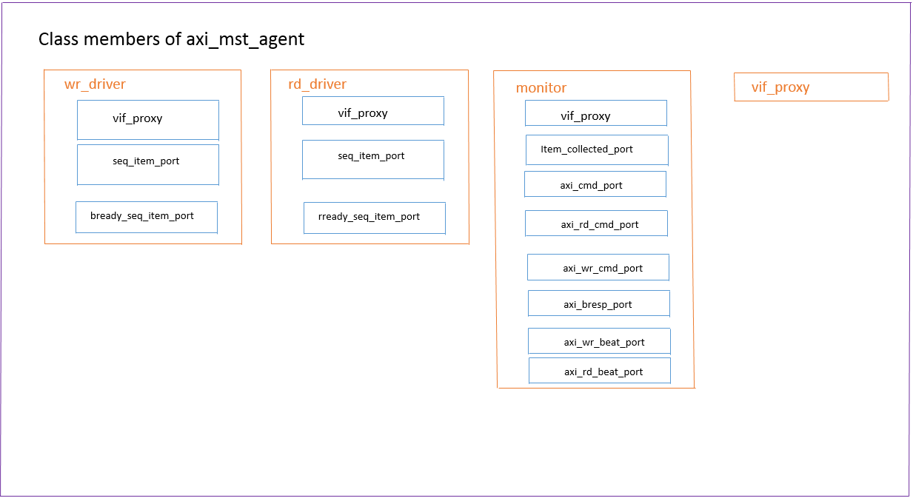

AXI Master Agent class, it contains other components that comprise the entire Master Verification component. These are the Monitor, Read Driver and Write Driver -- refer PG267 section about AXI Master Agent for more details.
axi_monitor `AXI_PARAM_ORDER monitor;
axi_mst_wr_driver `AXI_PARAM_ORDER wr_driver;
axi_mst_rd_driver `AXI_PARAM_ORDER rd_driver;
axi_vif_mem_proxy `AXI_PARAM_ORDER vif_proxy;
axi_mst_agent includes a monitor, a read driver, a write driver and vif_proxy. Please refer below picture for more details about axi_mst_agent.
| function new ( |
| ) |
Constructor to create an AXI Master Agent,~name~ is the instance name and axi_vip_if is the interface in the design. Please see PG267 for how to find the interface in design hierarchy.
| virtual function void set_verbosity( |
| ) |
Sets the verbosity of the axi_mst_agent and all sub classes.
| virtual function void set_agent_tag( |
| ) |
Sets the tag of the axi_mst_agent and all sub classes.
| function void set_vif( |
| ) |
Sets the Agent's virtual interface. This is the interface that will be monitored and/or driven.
| function void set_wr_transaction_depth( |
| ) |
Sets the number of WRITE transactions that the axi_mst_agent will have in flight at one time.
Returns the maximum number of WRITE transactions that the axi_mst_agent will have in flight at one time.
| function void set_rd_transaction_depth( |
| ) |
Sets the number of READ transactions that the axi_mst_agent will have in flight at one time.
Returns the maximum number of READ transactions that the axi_mst_agent will have in flight at one time.
Turn on current agent's transaction depth checks and its monitor's enable_transaction_depth_checks
Turn off current agent's transaction depth check and its monitor's enable_transaction_depth_checks
Enables the monitor in this agent to start collecting data.
Enables the monitor, READ driver and WRITE Driver in this agent to start collecting data. The drivers will only issue transactions when the send functions are called.
Disables the READ and WRITE drivers. Once disabled, no further action will occur by the drivers.
Allows for all inflight transactions to complete and no new transaction will be serviced. All other transactions will halt.
Resumes processing of the pending transactions.
Disables the monitor in this agent from start collecting data. . Once disabled, no further action will occur by the monitor.
This blocking function will not return until all the downstream transactions have completed.
Convenience function to generate a series of same type of transactions.
| virtual task send_multi_rand_wrbursts( |
| ) |
Convenience function to generate a series of random transactions.
Convenience function to generate a series of same type of transactions transactions.
| virtual task send_multi_rand_rdbursts( |
| ) |
Convenience function to generate a series of random transactions.
| virtual task AXI4_READ_BURST ( |
| ) |
This task does a full read process for AXI4.It is composed of a series of tasks and functions. It first creates transaction from master read driver,sets up the transaction, sends it and then waits till response back. This task returns when the read transaction is complete.
| virtual task AXI3_READ_BURST ( |
| ) |
This task does a full read process for AXI3. It is composed of a series of tasks and functions. It first creates transaction from master read driver,sets up the transaction, sends it and then waits till response back. This task returns when the read transaction is complete.
| virtual task AXI4LITE_READ_BURST ( |
| ) |
This task does a full read process for AXI4LITE. It is composed of a series of tasks and functions. It first creates transaction from master read driver,sets up the transaction, sends it and then waits till response back. This task returns when the read transaction is complete.
| virtual task AXI4_WRITE_BURST ( |
| ) |
This task does a full write process for AXI4.It is composed of a series of tasks and functions.It first creates transaction from master write driver,sets up the transaction, sends it and then waits till response back. This task returns when the complete write transaction is complete.
| virtual task AXI3_WRITE_BURST ( |
| ) |
This task does a full write process for AXI3.It is composed of a series of tasks and functions.It first creates transaction from master write driver,sets up the transaction, sends it and then waits till response back. This task returns when the complete write transaction is complete.
| virtual task AXI4LITE_WRITE_BURST ( |
| ) |
This task does a full write process for AXI4LITE. It is composed of a series of tasks and functions.It first creates transaction from master write driver,sets up the transaction, sends it and then waits till response back. This task returns when the complete write transaction is complete.
Convenience function to set the RREADY/BREADY of the master to not apply any backpressure to the simulation.